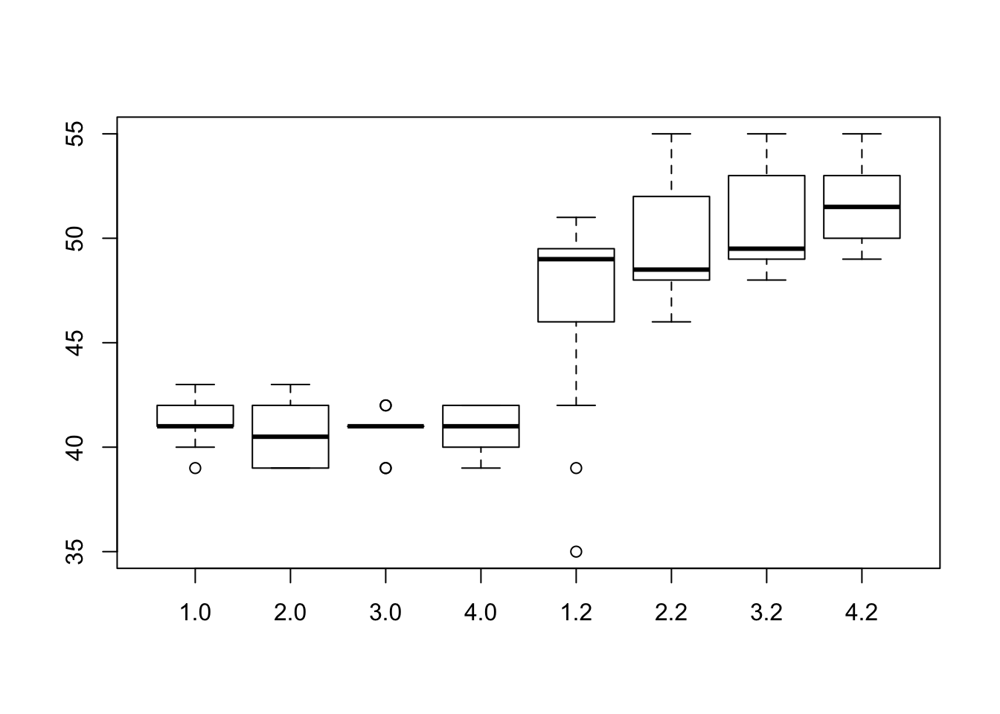
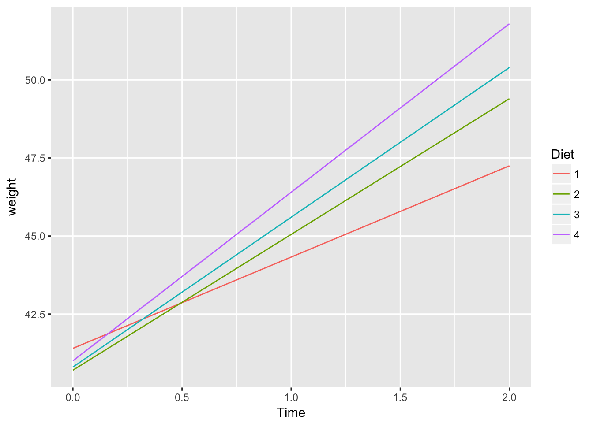
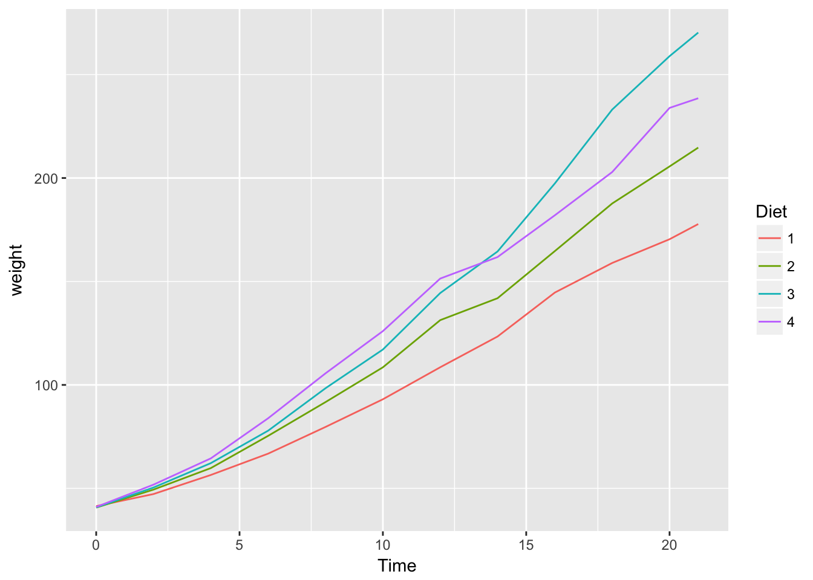

Last updated: 2018-04-16
Code version: 899ad0d
Tutor: Cas Kruitwagen
E.g. multiple measurements in time for a single subject
For 2 time-points
Target: divide variation (sums of squares): e.g. time and persons
Gives estimate of error between persons, and within persons over time
Here there is not really an interaction between persons and time, it is used as a random effect.
Regression models ignoring the time dependency tend to overestimate the standard errors of time-varying covariates, and underestimate the standard errors of time-invariant covariates.
For 3 timepoints, the covariance matrix of a single group is:
\[ \left(\begin{array}{ccc} var_1 & cov_{1,2} & cov_{1,3}\\ cov_{2,1} & var_2 & cov_{2,3}\\ cov_{3,1} & cov_{3,2} & var_3 \end{array}\right) \]
Assumption 2: covariance matrix any form, but ‘symmetric positive definite’
Robust to variance ratio < 2, 3 between groups
Assumption 3:
\[ \sigma^2\left(\begin{array}{ccc} 1 & \rho & \rho\\ \rho & 1 & \rho\\ \rho & \rho & 1 \end{array}\right) \]
Assumption 3 is strict, it assumes that the correlation between close-in-time observations is equal to the correlation between far-away-in-time observations
Use - fixed effects (like diet and time, what you can reproduce by design) - random effects (like participants), assumed to follow a known distribution
Advantages over split-plot ANOVA
require(dplyr)
data("ChickWeight")
str(ChickWeight)Classes 'nfnGroupedData', 'nfGroupedData', 'groupedData' and 'data.frame': 578 obs. of 4 variables:
$ weight: num 42 51 59 64 76 93 106 125 149 171 ...
$ Time : num 0 2 4 6 8 10 12 14 16 18 ...
$ Chick : Ord.factor w/ 50 levels "18"<"16"<"15"<..: 15 15 15 15 15 15 15 15 15 15 ...
$ Diet : Factor w/ 4 levels "1","2","3","4": 1 1 1 1 1 1 1 1 1 1 ...
- attr(*, "formula")=Class 'formula' language weight ~ Time | Chick
.. ..- attr(*, ".Environment")=<environment: R_EmptyEnv>
- attr(*, "outer")=Class 'formula' language ~Diet
.. ..- attr(*, ".Environment")=<environment: R_EmptyEnv>
- attr(*, "labels")=List of 2
..$ x: chr "Time"
..$ y: chr "Body weight"
- attr(*, "units")=List of 2
..$ x: chr "(days)"
..$ y: chr "(gm)"length(unique(ChickWeight$Chick))[1] 50unique(ChickWeight$Time) [1] 0 2 4 6 8 10 12 14 16 18 20 21Get only 2 timepoints
chick <- ChickWeight %>% filter(Time %in% c(0, 2))
head(chick) weight Time Chick Diet
1 42 0 1 1
2 51 2 1 1
3 40 0 2 1
4 49 2 2 1
5 43 0 3 1
6 39 2 3 1T-test with only time
t.test(weight~Time, data = chick)
Welch Two Sample t-test
data: weight by Time
t = -14.955, df = 58.154, p-value < 2.2e-16
alternative hypothesis: true difference in means is not equal to 0
95 percent confidence interval:
-9.252139 -7.067861
sample estimates:
mean in group 0 mean in group 2
41.06 49.22 boxplot(weight~Diet+Time, data = chick)
require(ggplot2)
chick %>%
group_by(Time, Diet) %>%
summarize(weight = mean(weight)) %>%
ggplot(aes(x = Time, y = weight, col = Diet)) + geom_line()
Time * diet
summary(aov(weight~Time*Diet, data = chick)) Df Sum Sq Mean Sq F value Pr(>F)
Time 1 1664.6 1664.6 270.267 < 2e-16 ***
Diet 3 62.7 20.9 3.394 0.02121 *
Time:Diet 3 100.0 33.3 5.414 0.00179 **
Residuals 92 566.7 6.2
---
Signif. codes: 0 '***' 0.001 '**' 0.01 '*' 0.05 '.' 0.1 ' ' 1Time * Diet and chicks
summary(aov(weight~Time*Diet + Error(Chick), data = chick))
Error: Chick
Df Sum Sq Mean Sq F value Pr(>F)
Diet 3 62.7 20.905 2.793 0.0508 .
Residuals 46 344.3 7.485
---
Signif. codes: 0 '***' 0.001 '**' 0.01 '*' 0.05 '.' 0.1 ' ' 1
Error: Within
Df Sum Sq Mean Sq F value Pr(>F)
Time 1 1664.6 1664.6 344.421 < 2e-16 ***
Time:Diet 3 100.0 33.3 6.899 0.000622 ***
Residuals 46 222.3 4.8
---
Signif. codes: 0 '***' 0.001 '**' 0.01 '*' 0.05 '.' 0.1 ' ' 1ChickWeight %>%
group_by(Diet, Time) %>%
summarize(weight = mean(weight)) %>%
ggplot(aes(x = Time, col = Diet, y = weight)) + geom_line()
aov(weight~Time*Diet + Error(Chick), data = ChickWeight) %>%
summary()
Error: Chick
Df Sum Sq Mean Sq F value Pr(>F)
Time 1 89700 89700 12.467 0.000985 ***
Diet 3 121337 40446 5.621 0.002372 **
Time:Diet 1 2482 2482 0.345 0.559984
Residuals 44 316586 7195
---
Signif. codes: 0 '***' 0.001 '**' 0.01 '*' 0.05 '.' 0.1 ' ' 1
Error: Within
Df Sum Sq Mean Sq F value Pr(>F)
Time 1 1962914 1962914 3049.28 <2e-16 ***
Time:Diet 3 84222 28074 43.61 <2e-16 ***
Residuals 524 337315 644
---
Signif. codes: 0 '***' 0.001 '**' 0.01 '*' 0.05 '.' 0.1 ' ' 1Use factor on time to eliminate linear assumption
aov(weight~factor(Time)*Diet + Error(Chick), data = ChickWeight) %>%
summary()
Error: Chick
Df Sum Sq Mean Sq F value Pr(>F)
factor(Time) 5 100207 20041 2.621 0.03804 *
Diet 3 116404 38801 5.075 0.00443 **
Residuals 41 313495 7646
---
Signif. codes: 0 '***' 0.001 '**' 0.01 '*' 0.05 '.' 0.1 ' ' 1
Error: Within
Df Sum Sq Mean Sq F value Pr(>F)
factor(Time) 11 1985929 180539 283.573 < 2e-16 ***
factor(Time):Diet 33 90379 2739 4.302 3.5e-13 ***
Residuals 484 308142 637
---
Signif. codes: 0 '***' 0.001 '**' 0.01 '*' 0.05 '.' 0.1 ' ' 1fit <- lm(weight~Time*Diet, data = ChickWeight)
summary(fit)
Call:
lm(formula = weight ~ Time * Diet, data = ChickWeight)
Residuals:
Min 1Q Median 3Q Max
-135.425 -13.757 -1.311 11.069 130.391
Coefficients:
Estimate Std. Error t value Pr(>|t|)
(Intercept) 30.9310 4.2468 7.283 1.09e-12 ***
Time 6.8418 0.3408 20.076 < 2e-16 ***
Diet2 -2.2974 7.2672 -0.316 0.75202
Diet3 -12.6807 7.2672 -1.745 0.08154 .
Diet4 -0.1389 7.2865 -0.019 0.98480
Time:Diet2 1.7673 0.5717 3.092 0.00209 **
Time:Diet3 4.5811 0.5717 8.014 6.33e-15 ***
Time:Diet4 2.8726 0.5781 4.969 8.92e-07 ***
---
Signif. codes: 0 '***' 0.001 '**' 0.01 '*' 0.05 '.' 0.1 ' ' 1
Residual standard error: 34.07 on 570 degrees of freedom
Multiple R-squared: 0.773, Adjusted R-squared: 0.7702
F-statistic: 277.3 on 7 and 570 DF, p-value: < 2.2e-16require(tidyr)
mat <- ChickWeight %>%
filter(Diet == 1) %>%
data.table::dcast(Chick~Time, value.var = "weight") %>%
select(-Chick) %>%
as.matrix()Generate an intercept for each subject
require(nlme)
fit <- lme(fixed = weight~Diet*factor(Time),
random = ~1|Chick, data = ChickWeight)
anova(fit) numDF denDF F-value p-value
(Intercept) 1 484 1194.5312 <.0001
Diet 3 46 8.9066 1e-04
factor(Time) 11 484 285.0129 <.0001
Diet:factor(Time) 33 484 4.2807 <.0001sessionInfo()R version 3.4.3 (2017-11-30)
Platform: x86_64-apple-darwin15.6.0 (64-bit)
Running under: macOS Sierra 10.12.6
Matrix products: default
BLAS: /Library/Frameworks/R.framework/Versions/3.4/Resources/lib/libRblas.0.dylib
LAPACK: /Library/Frameworks/R.framework/Versions/3.4/Resources/lib/libRlapack.dylib
locale:
[1] en_US.UTF-8/en_US.UTF-8/en_US.UTF-8/C/en_US.UTF-8/en_US.UTF-8
attached base packages:
[1] stats graphics grDevices utils datasets methods base
other attached packages:
[1] nlme_3.1-131 tidyr_0.8.0 ggplot2_2.2.1 bindrcpp_0.2 dplyr_0.7.4
loaded via a namespace (and not attached):
[1] Rcpp_0.12.15 knitr_1.19 bindr_0.1
[4] magrittr_1.5 munsell_0.4.3 lattice_0.20-35
[7] colorspace_1.3-2 R6_2.2.2 rlang_0.1.6
[10] plyr_1.8.4 stringr_1.2.0 tools_3.4.3
[13] grid_3.4.3 data.table_1.10.4-3 gtable_0.2.0
[16] git2r_0.21.0 htmltools_0.3.6 lazyeval_0.2.1
[19] yaml_2.1.16 rprojroot_1.3-2 digest_0.6.15
[22] assertthat_0.2.0 tibble_1.4.2 reshape2_1.4.3
[25] purrr_0.2.4 glue_1.2.0 evaluate_0.10.1
[28] rmarkdown_1.8 labeling_0.3 stringi_1.1.6
[31] compiler_3.4.3 pillar_1.1.0 scales_0.5.0
[34] backports_1.1.2 pkgconfig_2.0.1 This R Markdown site was created with workflowr